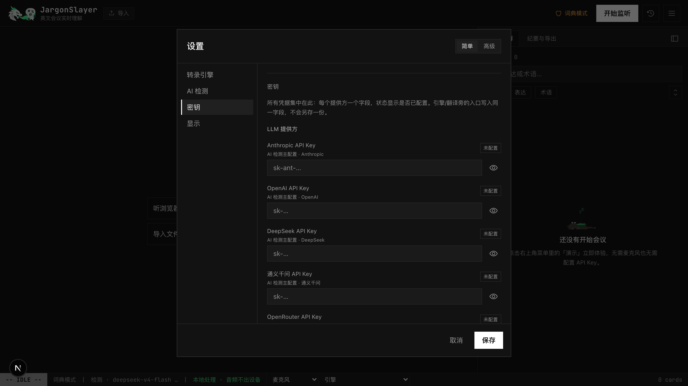
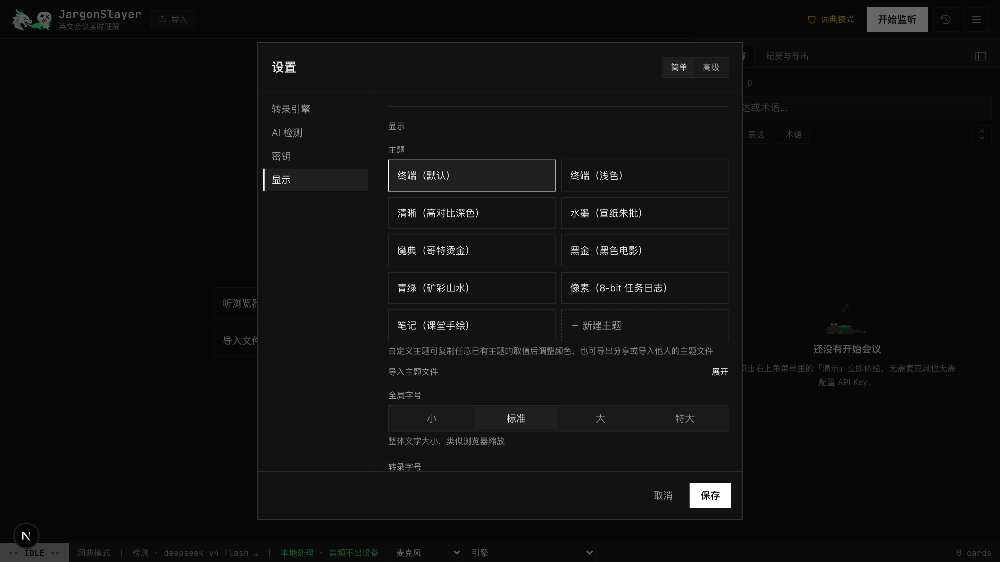

JargonSlayer Docs
JargonSlayer is a real-time English-meeting comprehension assistant for non-native speakers. It transcribes meetings, detects idioms, business slang, indirect phrasing, acronyms, proper nouns, and domain terms, then turns them into short explanation cards. After the meeting, it can generate a bilingual summary, full transcript translation, study cards, and exportable notes.
This page is the hands-on guide: install, run a meeting, review it afterwards. The other three pages go deeper:
Features
A tour of everything the app can do, with screenshots and demo videos, plus the capability matrix and what's coming next.
Changelog
Version-by-version release history, from v0.1 to today, with dates.
Power Users
Self-hosting, sidecars, the settings reference, custom themes, dictionary pack authoring, webhooks, architecture, and testing.
Quickstart
Three ways to run JargonSlayer, all free: the macOS desktop app (easiest, signed installer), the web app (hosted or self-hosted), and a Chrome extension for lightweight dictionary lookups. An iOS beta is available on TestFlight by invite.
Desktop app (macOS, Apple Silicon)
- Download the signed, notarized DMG from releases/latest.
- Open the DMG, drag JargonSlayer into Applications, launch it.
- A full-screen wizard appears on first launch. On macOS 26+ its first screen is an engine choice: 系统识别 (System Speech, zero install) — picking it skips provisioning entirely and the app is ready immediately — or Whisper (higher quality), which continues the original flow. On the Whisper path nothing downloads until you click
开始安装: it then installs an isolated Python runtime, faster-whisper, and the model you pick (medium pre-selected) entirely under the app's own data directory — never touching system Python. - Two optional, skippable onboarding steps follow: connect OpenRouter (for AI detection/explanations) and add a Hugging Face token (for speaker diarization). See Desktop App below for details.
Web app
Try the hosted preview first — zero install. The fastest way to understand the product either way is the built-in demo: open the ≡ menu → 演示, no microphone or API key needed. It plays back a scripted product meeting and exercises the full pipeline — transcript, highlighted expressions, cards, and (with AI configured) a bilingual summary.
Or run it yourself:
git clone https://github.com/mianaz/jargonslayer.git
cd jargonslayer
npm install
npm run dev
# open http://localhost:3000For a production-like local run, use npm run build and npm start. Environment variables, deploy tiers, and the local Whisper sidecar are covered in Power Users.
Chrome extension (JargonSlayer Lite)
Download the zip from releases, unzip it, then chrome://extensions → enable Developer mode → Load unpacked → select the unzipped folder. The extension is not listed on the Chrome Web Store for now — load-unpacked from the release zip is the supported install path (the same way many developer tools ship). Lite does live mic capture plus the built-in dictionary and on-device translation in a side panel — no LLM detection, no tab/system audio, no account; see the capability matrix for the full split.
iOS (TestFlight beta)
The iOS app is in TestFlight beta, by invite — get in touch for an invite. It needs iOS 26+ and runs on-device system speech recognition and on-device Apple Translation, no API key required. If you just want JargonSlayer on a phone today, the web app also installs to the home screen as a PWA through Safari.
Choosing a Setup
The right mode depends on the meeting — mainly on how sensitive the audio is and how much setup you are willing to do. Start from the closest row:
| Use Case | Recommended Setup | Trade-off |
|---|---|---|
| Try the product in 30 seconds | Hosted preview + Demo | No setup, but preview AI text follows the preview provider path. |
| Daily low-sensitivity meetings | Browser recognition + BYOK AI | Fastest live setup; browser vendor receives audio. |
| Privacy-sensitive meetings | Local Whisper + dictionary-only | Audio and text stay local, but explanations are limited to dictionary/custom entries. |
| Private but context-aware detection | Local Whisper + Ollama OpenAI-compatible endpoint | Can stay local, but model quality depends on the local model. |
| Understanding the other side of an online call | macOS desktop: 系统/App 音频, zero extra setup. Web: tab audio or a virtual audio device + local Whisper. | Desktop needs only the one-time permission grant; the web path needs a sidecar and, for virtual devices, extra OS-level routing. |
| Post-meeting analysis of recordings | Browser audio/video import for short files; sidecar import for larger/diarized files | Browser path is easiest; sidecar path handles heavier local jobs. |
Example: a fully local setup, step by step
The strictest recipe — nothing leaves the machine, no key, no account:
- Desktop app: install from the DMG and pick Whisper in the wizard (or 系统识别 on macOS 26+). Web app: run it locally and start the Whisper sidecar.
- In Settings, turn
AI 检测off — the built-in dictionary keeps detecting instantly, entirely offline. - If you want live translation, pick the platform's on-device engine under
翻译引擎(Chrome's built-in translator on the web app, Apple Translation on desktop/iOS) instead of an LLM. - Leave webhook and folder auto-export unset, or point them at local destinations only.
The Privacy table below shows exactly which data leaves the machine in every other configuration.
Example: an online meeting where you need the other side
- On the macOS desktop app: choose the 系统/App 音频 audio source, start listening, grant the one-time "System Audio Recording" permission — done. Zoom, Teams, and WeChat audio all flow in; your own microphone is never captured on this source.
- On the web app: share the meeting tab with tab audio (hosted preview includes a limited no-key trial), or route system audio through a virtual device such as BlackHole (macOS) / VB-Cable (Windows) into local Whisper.
Meeting Workflow
1. Listen
Pick an audio source (mic / browser tab / system audio / import) and an engine — grouped into 本地 STT 模型 / 系统 STT 服务 / 第三方 STT 提供商 in the picker — then click 开始监听. As of v0.7.4, audio source is its own control and can be changed mid-meeting, not just before one starts. Final transcript segments appear in the transcript panel; interim text appears in a lighter style while speech is still being recognized.
2. Read Cards
The right panel shows explanation cards for expressions and term cards for acronyms, companies, products, metrics, and technical terms. Repeated hits increment the original card instead of flooding the feed.
3. Review
Stop the meeting, generate the report, export Markdown, Anki TSV, JSON, or a Cornell note, then reopen the session later from history.
- Click underlined expressions in the transcript to jump to their cards.
- Select any transcript text to look it up. As of v0.7.4, matching dictionary packs and senses are listed first; a genuine miss falls through to an AI explanation with translation, using surrounding context. The lookup keeps generating in the background and lands in the card list even if you close the popover;
加入我的词典is a secondary action inside it, not the default one. - Assign speakers by hand — one line, or several selected lines at once — with an "apply to this and following" option; a live "current speaker" tag tracks along while you listen. A manually assigned line is locked and survives later automatic diarization. Click any speaker label to rename it.
Floating Captions (悬浮字幕)
Turn on 悬浮字幕 from the ≡ menu to pop the live transcript into a small, always-on-top caption view — just the last final line, the interim line being recognized, and the most recent explanation gloss. On the web app this opens a Document Picture-in-Picture window (Chrome/Edge 116+; the menu entry hides itself where the browser has no PiP API). On the desktop app there is no second window — it shrinks the main window itself into a chromeless strip you can drag from anywhere, then restores the previous size when you close it. It is meant to sit over a video call while the full app stays out of the way. iOS has no floating-caption path and hides the entry.
Crash Recovery
A live meeting is auto-drafted as you go. After a page refresh, a closed tab, or a browser crash, history shows a 恢复到历史记录 banner that restores everything up to the moment things stopped, so one accident does not cost the whole meeting.
Translation
Live bilingual subtitles and full-transcript translation share one setting: 双语转录 in Settings, right above a 翻译引擎 picker. Four engines: the platform's on-device translator (系统翻译 — Chrome's built-in Translator API on the web app, Apple's Translation framework on desktop/iOS; the default, no key needed), the LLM, DeepL (BYOK), and 有道翻译 (Youdao, BYOK, v0.7.1+). DeepL and Youdao are native-app engines — the web app shows them disabled in the picker because neither API allows cross-origin browser requests, so on the web the practical choices are on-device or LLM. Youdao needs an 应用ID and 应用密钥 from ai.youdao.com (创建应用, service 文本翻译, access method API) and is billed per character (roughly ¥48 per million EN→ZH characters, with a new-user trial credit).
After a meeting stops, a 补全翻译 (N) button appears in the toolbar whenever bilingual subtitles are on and N segments were never translated (a missed API call, a pause with no key, and so on). It re-runs just those segments through the configured translation engine in small batches and disappears once they're filled.
Transcription Engines
The web app and the desktop app offer different engine lineups — desktop drops browser-based recognition entirely (Tauri's webview has no Web Speech API) and adds a CoreAudio-based system/app audio capture that the web app can't do. The engine picker lives as a dropdown in the bottom status bar on every screen size.
Grouped by kind (v0.7.4): the picker sorts engines into three families — 本地 STT 模型 (local models you run yourself, like local Whisper or 英文加速), 系统 STT 服务 (the OS/browser's own recognizer — browser recognition on the web, 系统识别 on desktop), and 第三方 STT 提供商 (BYOK cloud vendors — Soniox, Deepgram, ElevenLabs). Third-party providers stay visible even without a key configured, each labeled 已配置 or 未配置, instead of disappearing until you set one up.
Web app
| Engine | Setup | Audio Destination | Best For |
|---|---|---|---|
| Demo | None | None; scripted playback | Trying the app without a microphone or key |
| Browser recognition | None, Chrome/Edge recommended | On-device on Chrome 139+ when a language pack is available (local); otherwise the browser vendor's speech service (cloud) | Everyday low-friction meetings |
| Local Whisper | Python sidecar (manual install — see Power Users) | Local machine via 127.0.0.1 | Sensitive meetings and offline use |
| Tab audio | Same local sidecar | Local machine | Capturing the other side of an online meeting |
| Soniox (experimental) | Soniox API key (BYOK) | Soniox realtime API, direct WSS under your key (cloud) | Live code-switched zh-en; stays 实验 until it clears the in-house benchmark; the hosted preview also offers a limited trial — see below |
| Deepgram | Deepgram API key (BYOK) | Cloud processing (Deepgram, under your key) | English-only meetings prioritizing cloud recognition quality |
| ElevenLabs | ElevenLabs API key (BYOK) | Cloud processing (ElevenLabs, under your key); ElevenLabs retains transcripts by default unless you're on an enterprise no-retention plan | An additional BYOK cloud STT option, billed per use |
Desktop app (macOS)
| Engine | Setup | Audio Destination | Best For |
|---|---|---|---|
| 麦克风 · 本地 Whisper (Microphone, local Whisper) | None — bundled and self-managed by the app | Local machine | Default daily-use engine; medium model out of the box |
| 麦克风 · Soniox (Microphone, Soniox, experimental) | Soniox API key (BYOK) | Soniox realtime API, direct WSS under your key (cloud) | Same code-switched-zh-en case as the web build |
| 系统/App 音频 (System/App audio) | None — bundled, same local Whisper sidecar | Local machine | Hearing the other side of a meeting running in a native app (Zoom, Teams, WeChat), no virtual sound card |
| 系统识别 (System Speech, v0.4.3) | None — macOS native recognition, no model download, no Python | Local machine; audio never leaves the capturing process | First meeting right after install on macOS 26+; ~30 locales, glossary terms bias recognition; no speaker diarization, Chinese output may lack punctuation |
| 英文加速 (Parakeet, v0.4.4) | Opt-in in the model picker (not default) — Apple Silicon (M-series) + macOS 14+ required, ~2.5GB download (~1GB MLX runtime included) | Local machine; audio never leaves the device | English-priority meetings; far faster than Whisper (~100x realtime in batch inference); no realtime speaker diarization yet |
There is no browser-recognition engine on desktop, and desktop's tab-audio slot is 系统/App 音频 instead — see Desktop App below for the permission flow and what it captures.
Imports
Everything lives under 历史 — the import hub covers pasted transcripts, files, and URLs, and every import ends up as a normal saved session you can analyze, translate, and export.
Transcript Import
- Open
历史and choose导入文稿. - Paste text or upload
.txt,.srt, or.vtt. - Review the parsed segments and speaker/timestamp handling.
- Optionally generate Chinese translation lines.
- Import and analyze; the result is saved as a stopped session.
Audio and Video Files
- Open
历史and choose导入录音. - Use browser-local transcription or the local Whisper sidecar path.
- Supported recording formats include common audio files; video files have their audio extracted locally through ffmpeg.wasm before browser transcription.
- With the sidecar path, diarization can be used if pyannote is configured.
Video URL Import
Video URL import is local-tier only. The sidecar uses yt-dlp on your machine and runs the result through the local transcription job pipeline. It is not part of the hosted preview path.
Desktop App
The desktop build wraps the same app in a native Tauri shell with a self-managed local Whisper — see Quickstart for installing it. This section covers what's specific to the desktop build: the system/app audio engine, the two optional onboarding steps, the background task center, the latency indicator, and the update check.
System/App Audio
Pick 系统/App 音频 as the audio source to transcribe the other side of a meeting running in a native app — Zoom, Teams, WeChat — with no virtual audio device and no BlackHole/VB-Cable setup. It replaces the desktop's old tab-audio slot, which could only fail inside Tauri's webview (there's no tab-share picker to launch there); the web app's tab audio is unchanged.
- What it captures: everything this Mac is currently playing — the meeting counterpart's voice, but also background music or notification sounds if they happen to be playing. It never captures your microphone.
- Permission: macOS prompts for "System Audio Recording" the first time you actually start listening on this engine (not when you merely pick it in the dropdown) — its own TCC category, entirely separate from microphone and Screen Recording permission.
- Floor: requires macOS 14.4 or later. Below that, the option shows disabled in the picker with an explanation rather than being hidden.
- Audio destination: local only — audio goes to the bundled Whisper sidecar and nowhere else; the same 音频在本地处理 status applies as the mic-based local engines.
First-run Onboarding
Right after the provisioning wizard finishes (not on every ordinary launch — a returning user with an already-healthy local service is never nagged), two optional, individually skippable steps appear:
- Connect OpenRouter — paste an existing key, or click 使用 OpenRouter 登录 for one-click OAuth: the app opens your system browser to complete login, then hands control back automatically. If OAuth fails, a fallback link to
openrouter.ai/keyslets you create and paste a key instead. This unlocks AI detection, translation, and post-meeting reports. - Speaker diarization token — paste a Hugging Face token, after accepting the usage terms for pyannote's segmentation and speaker-diarization models on Hugging Face (the step links directly to both). Skipping this is the zero-friction default — diarization stays off until you come back to it.
Both steps write to the same Settings the manual paths use — as of v0.7.4, the key/token itself lives under Settings → 密钥 — so a value entered here behaves identically to one entered later by hand. Skipping either one leaves the app fully usable with cloud/BYOK-less features.
Background Task Center
A 后台任务 launcher lives in the header (desktop only), with an activity dot when a task is running or an app update is available. Opening it shows two zones:
- 系统状态 (system status) — a 本地服务 row showing 托管 (app-managed) or 外部 (external sidecar) mode plus 运行中 / 未连接 / 未知 status, with a 重新检测 button to re-probe on demand; and an 应用更新 row (see Update Check below).
- 任务 (tasks) — model downloads and the diarization install, plus any import jobs, each with a progress readout. A failed model download or diarization install shows a 重试 action; a completed import task is clickable and jumps straight to its session.
Transcription Latency
While actively listening on a local-Whisper-backed engine (mic Whisper, tab audio, or system/app audio), the status bar shows a 延迟 ~Ns chip once decode lag stays above roughly 2 seconds. It's an early-warning signal that the machine/model combination is falling behind realtime, not an error — if it shows up often, switching to a lighter model (small) usually clears it on older hardware.
Update Check
The app quietly checks GitHub's latest release once per launch (cached with an ETag, so repeat checks are cheap) and shows current vs. latest version in 后台任务 → 系统状态. Re-check anytime with 重新检查. This is a check, not an auto-installer: when a newer version exists, 打开下载页 takes you to the GitHub release to download and install yourself.
AI Modes and Provider Setup
Dictionary-only Mode
Turn off AI 检测 in Settings to keep transcript text local. The built-in dictionary still detects fixed expressions and terms instantly. This is the zero-key, zero-cost, fully local text path — and since v0.6, it's the default for new installs; AI mode is opt-in.
Hosted Preview AI
Without a key, the hosted preview uses the preview server's configured model path. Text transits the project server in memory and is forwarded to OpenRouter with data_collection=allow, and model choice is limited to the preset list. Treat preview AI text as shareable with the model provider.
With your own key entered, the hosted preview switches to browser-direct BYOK: every AI call goes straight from your browser to your configured provider, any model is allowed, and the key and meeting content never touch the project server — the server even rejects key-carrying relay requests outright. Custom OpenAI-compatible endpoints must support browser CORS on the preview; endpoints without it need the self-hosted or desktop build.
BYOK AI
- Open
设置 → AI 检测and pick a provider preset — Anthropic, OpenAI, DeepSeek, 通义千问, OpenRouter, Poe, local Ollama, or a custom OpenAI-compatible endpoint. - Set the base URL if required.
- Enter an API key under
设置 → 密钥(see the note below), connect OpenRouter with one-click OAuth, or use a server environment variable such asANTHROPIC_API_KEY. - Back in
AI 检测, choose detection and report models, test the connection, and save.
设置 → 密钥 now holds every API key and token — LLM provider, transcription (Soniox/Deepgram/ElevenLabs), translation (DeepL/有道), and the Hugging Face diarization token — instead of five separate entry points scattered across their feature sections. Storage and Keychain custody are unchanged.
Per-task Models
Advanced settings can use different providers or models for detection, translation, and reports. The normal split is fast/cheap for live detection and stronger models for post-meeting reports. Details and the full settings reference live in Power Users.
AI Status Panel (AI 状态)
Open AI 状态 from the bottom status line to see what the AI is actually doing. Each of the four task types — detection, explanation, translation, and reports — shows the model it uses, how it is routed (自带 Key your own key / 服务端代理 server proxy / 未配置 unconfigured), and running counts of calls, failures, and QC-drops. A small status chip in the status line mirrors the same at a glance. When a key is missing, the panel says plainly which features fall back to the dictionary and which are unavailable, instead of failing silently.
Review and Learning
The /review page turns saved glossary and meeting data into a lightweight learning center.

- Use the stats strip for meeting count, cumulative expressions, cumulative terms, and recent activity.
- Use the word cloud to scan repeated expressions and terms.
- Use the Top 10 list to focus on the most common items.
- Use flashcards for quick practice; mark entries as known or unknown.
- Work through
到期复习— a due-driven review queue with SM-2-lite spaced scheduling; words you've mastered are suppressed on live cards so the feed stays focused on what's still new. - Use Anki TSV export (or one-click AnkiConnect sync) for serious spaced repetition.
Glossary and Packs
Personal Glossary
- Open
我的词典from the app. - Add entries manually, or select transcript text to look it up first — matching packs and senses are listed, and a genuine miss is explained and translated — then choose
加入我的词典as a secondary action. - Saving records the exact wording it appeared as in that meeting, not just the dictionary's canonical form — save it after hearing "back on the envelope" and the entry keeps that surface form even though the dictionary headword is back of the envelope, so review and future detection both recognize the variant you actually heard.
- Saved entries participate in future detection and shadow built-in dictionary matches.
- Split entries across multiple named custom packs, each toggled on or off per meeting.
- Export glossary entries to Anki TSV when you want a separate review workflow.
Built-in Packs
Dictionary packs let you narrow detection by topic. Seventeen built-in packs ship today — core expressions, meeting flow, project execution, feedback, sales and growth, softening/criticism, academic meetings, chitchat, business terms, tech terms, pharma/biotech, statistics, machine learning, bioinformatics, and more — over 1,000 entries in total, with multi-sense ranking that sorts definitions by meeting context and variant matching that catches inflected and alternate forms (say keep the ball rolling and get the ball rolling still hits). Every pack toggles on or off per meeting; core is always on. A handful of everyday-English headwords in the stats/ML packs (mean, prior, attention, precision, …) stay opt-in — they only fire once you customize the enabled-pack list, so casual speech is never flagged under the default all-on state.
Multi-sense, domain-aware definitions (v0.7.4): a headword with more than one definition ranks them by the meeting's domain — CAC resolves to Cancer-Associated Cachexia in a cachexia talk rather than Customer Acquisition Cost, NDA to New Drug Application inside "IND … or NDA or BLA," and PR to precision-recall rather than Pull Request in an ML talk. An unclear domain still returns a usable definition.
Community Packs
Settings has an official catalog you can browse and install from with one click — six specialized packs (medicine, biopharma, AI/ML, law, finance, engineering; 4,300+ terms total) published at jargonslayer-dicts, alongside file or GitHub-URL import for any third-party pack. Installed packs auto-check for updates once a day, and an installed pack's own definition takes precedence over a built-in one when both define the same term (v0.7.2+).
Want to build and publish your own pack? The manifest format, validation rules, and publishing walkthrough are in Power Users → Pack Authoring.
Appearance
Everything under Settings → 显示 is local to this browser or app and applies live when you save. None of it travels with your data.
Built-in Themes
Nine built-in themes ride a strict 17-token engine (hex-only, validated, injected as CSS properties rather than raw strings). Every theme is contrast-checked against WCAG AA, and native controls plus the app icon follow its light/dark scheme:
- 终端（默认） — the terminal dark default.
- 终端（浅色） — its warm-paper light counterpart.
- 清晰（高对比深色） — a high-contrast dark variant for readability.
- 水墨（宣纸朱批） — ink-wash on rice paper with cinnabar accents (light).
- 魔典（哥特烫金） — gothic gilt-on-leather (dark).
- 黑金（黑色电影） — black-and-gold editorial noir (dark).
- 青绿（矿彩山水） — mineral-green landscape painting (dark).
- 像素（8-bit 任务日志） — a quest-log pixel look on deep indigo with sprite-color accents (dark).
- 笔记（课堂手绘） — a classroom-notebook look with pencil-blue and red-pen annotations on white cards (light).
Custom Theme Editor
Beyond the built-ins, the theme grid has a 新建 tile that opens an in-place editor. Create a theme from scratch or duplicate any theme (built-in or custom), then edit all 17 tokens with a native color picker plus a hex field each, set the light/dark scheme, and name it. A live preview applies as you edit and reverts to the saved theme if you cancel. Contrast hints flag tokens that fall below the AA/UI-contrast bars as you go — they warn, they never block. Export a theme to a JSON file, or import one by pasting or picking a file; imported themes are validated and their id is re-minted, so an imported file can never shadow or overwrite a built-in. Delete with a confirm; deleting the active theme falls back to the terminal default. The token schema and a full example theme JSON live in Power Users → Theming.

Fonts
Two independent pickers — 界面字体 (UI font) and 等宽字体 (monospace) — each offer zero-download system presets or a custom system font name you type in. UI presets are default / serif / rounded; monospace presets are the bundled JetBrains Mono default / your system monospace. Custom names are sanitized before use.
Glass and Type Size
The 毛玻璃 (frosted glass) toggle is off by default; turning it on frosts true overlays — the settings panel, drawers, popovers, the hover card, the import hub — with a backdrop blur. Three type controls sit alongside: 全局字号 (global size, four tiers 小 / 标准 / 大 / 特大, like browser zoom), 转录字号 (scales the transcript area only, independent of global size), and 转录行距 (transcript line spacing).
Bit's Wardrobe (Bit 装扮)
The status-line pixel dragon owns a wardrobe. Under 跟随主题 (default), each built-in theme dresses him: round reading glasses for 清晰, a straw hat for 水墨, a wizard hat for 魔典, a fedora for 黑金, a jade crown for 青绿, a hero headband for 像素, a pencil behind the ear for 笔记 — the two terminal themes and custom themes keep him plain. Any piece can also be pinned manually (or removed with 原装), independent of theme. Hats stay on while he sleeps; they fall off beside him when he rolls belly-up. He spreads his wings and throws pixel sparks when a report finishes generating or the review queue clears, and a second Bit keeps you company in the learning center.
Export and Backup
Session Exports
- Markdown report, optionally with frontmatter for Obsidian/Dataview.
- docx export, ready to open as an editable Word file.
- Anki TSV for study cards, or one-click sync into your local Anki via AnkiConnect (with dedup).
- Full session JSON with
schemaVersion: 1. - Copy-to-clipboard summary.
- Cornell note export as PNG or Markdown.
Markdown, docx, and copy-to-clipboard exports carry your existing translations. If the meeting has any segments that never got translated, a dialog offers 补全后导出 (run gap-fill first, then export — a toast reports any that still failed), 直接导出 (export now, with untranslated segments marked 未翻译 inline), or 取消. JSON, Anki TSV, and Cornell-note exports are unaffected by this gate. On iOS, every export hands the file to the system share sheet.
Auto-export, Webhook, and Full Backup
Settings can save every session to a folder as Markdown plus JSON (File System Access API, so Chromium-oriented — built for Obsidian vaults and agent workflows), POST a meeting.saved webhook to a custom URL after each save, and take a full backup of sessions, glossary, and settings. Restores preview the contents before writing and sanitize risky settings. Payload formats, file-naming, and an example webhook receiver are in Power Users → Automation.
Privacy
JargonSlayer's privacy posture is explicit data paths, not vague promises. The right mode depends on the meeting.
| Data | Destination |
|---|---|
| Audio, local Whisper / tab audio / system-app audio (desktop) | Local machine only — loopback websocket, or (system/app audio) a local process channel into the same bundled sidecar |
| Audio, 系统识别 System Speech (desktop, macOS 26+) | Local machine only — transcribed inside the very process that captures it; audio crosses no channel, not even a local one |
| Audio, 英文加速 Parakeet (desktop, Apple Silicon) | Local machine only — same fully-local posture as local Whisper; the model itself is downloaded once from Hugging Face on first use |
| Audio, browser recognition | On-device (local) on Chrome 139+ when a language pack is available; otherwise the browser vendor's speech service |
| Audio (Soniox engine, BYOK, experimental) | Cloud, processed in real time, not retained — direct WSS to the Soniox realtime API under your own key |
| Audio (hosted preview: Soniox limited trial / tab audio) | Cloud, processed in real time, not retained — no key required; up to 3 clips per person per day, ~10 min max per clip, shared first-come quota |
| Audio (Deepgram engine, BYOK, English) | Cloud processing — under your own key, transcribed on Deepgram's cloud |
| Audio (ElevenLabs engine, BYOK) | Cloud processing under your own key; ElevenLabs retains transcripts by default unless you're on an enterprise no-retention plan |
| Audio/video file imports | Browser-local transcription; files are not uploaded |
| Preview AI text | Project server memory only, then OpenRouter with data_collection=allow |
| BYOK AI text | The provider endpoint configured by the user |
| Subscription-direct detect/define | Local claude or codex CLI via sidecar |
| Dictionary-only text | Local only |
| History, settings, keys | Local browser storage; no account |
AI 检测, and avoid webhook/auto-export to external locations. The step-by-step version is in Choosing a Setup.The formal policy lives at privacy.html; local logs are hardened so they never carry meeting speech (v0.7.2+).
FAQ and Troubleshooting
Speech recognition is unsupported
Use Chrome or Edge for browser recognition, or switch to local Whisper.
Whisper will not connect
Confirm the sidecar terminal is running, the URL is ws://localhost:8765, and the local firewall is not blocking loopback traffic. As of v0.7.4, a failed connection to a self-hosted transcription service shows a readable setup message instead of a raw socket error.
Detection is too noisy or too quiet
Adjust the confidence threshold, enable/disable packs, or switch AI detection on or off depending on the meeting.
Report generation is slow
Long meetings are chunked and translated in parallel; one to two minutes is normal for substantial transcripts. Cards can be exported without a report.
My project directory moved and the sidecar broke
Python virtual environments contain absolute paths. Rebuild the sidecar venv after moving or renaming the repo.
Desktop: 本地服务 shows 未知
The app hasn't probed the local service yet, or the last probe didn't return. Open 后台任务 (desktop, top right) and click 重新检测 next to 本地服务; if it stays down, check Settings → 转录引擎. See Desktop App for the full background task center.
Filing a bug report
诊断信息 in Settings (advanced) holds a local, redacted bundle — recent app events plus a scrubbed settings snapshot, never meeting audio or transcript text. 复制诊断信息 copies it; 导出诊断文件 saves it as a file instead (opens the share sheet on iOS). On desktop the bundle also folds in a tail of the three local logs (Whisper 服务, 系统/App 音频, 系统识别) — the same three you can preview individually with 查看本地日志. The Chrome extension has its own, smaller 复制诊断 button in the side panel. Attach whichever applies when you file an issue.